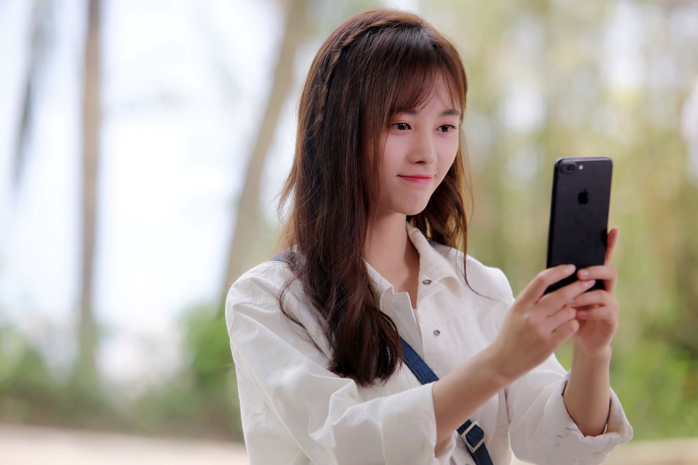
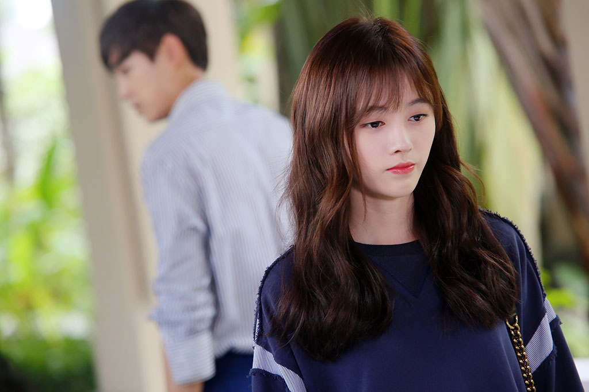
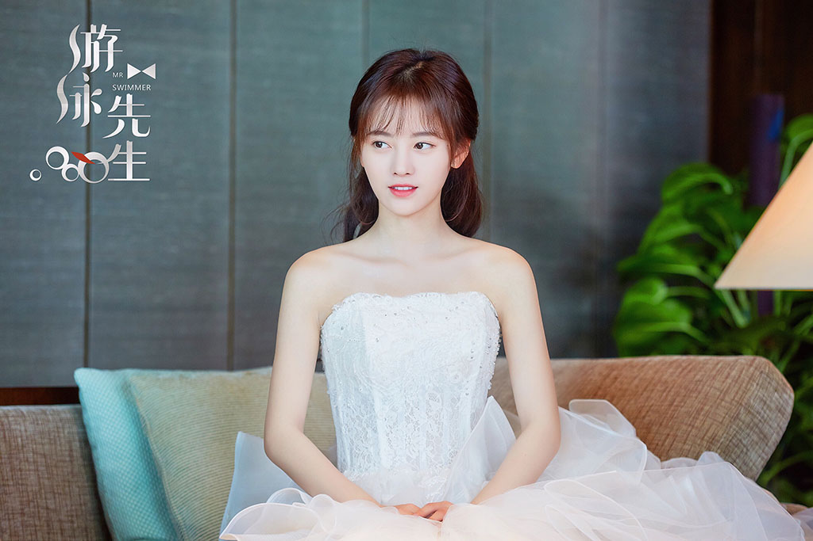
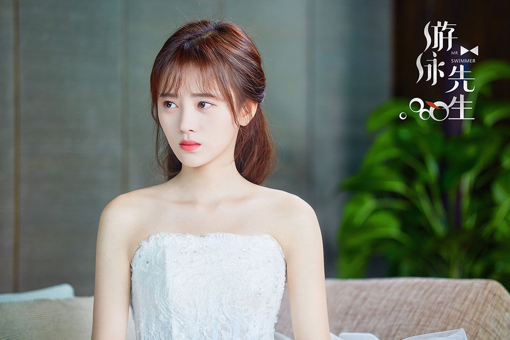
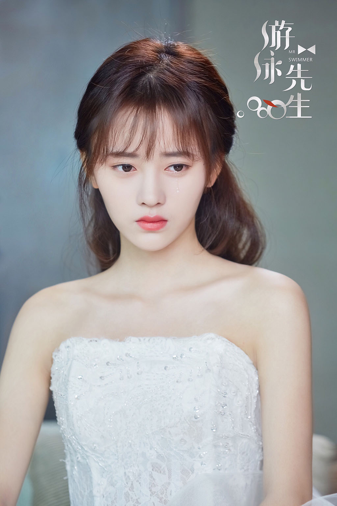
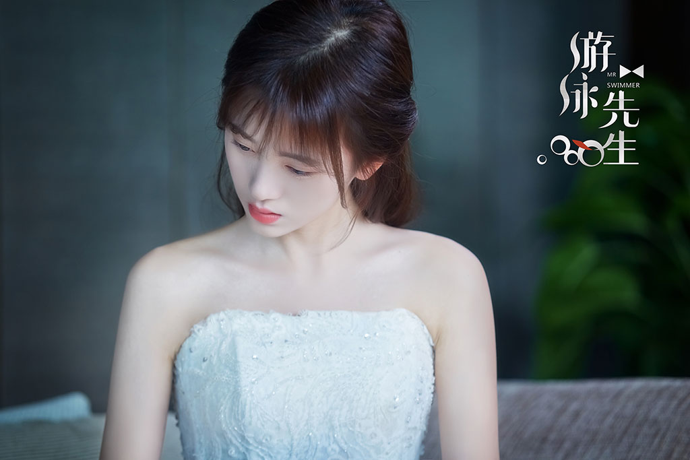
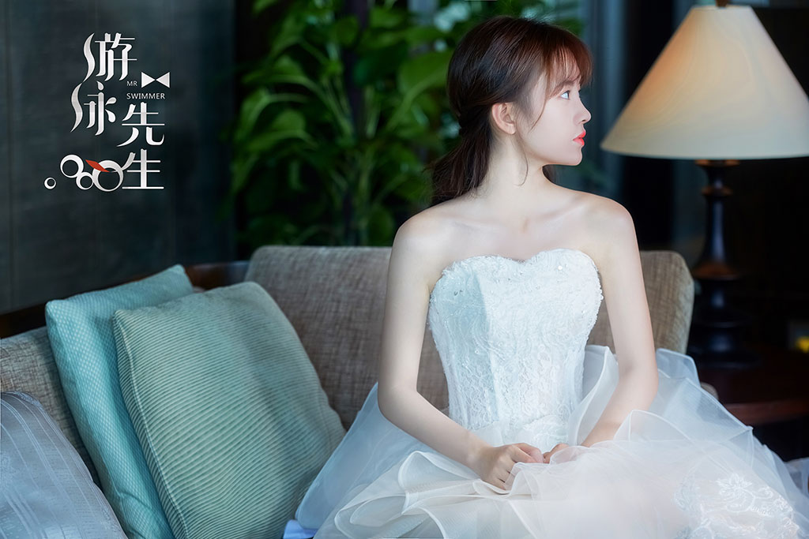
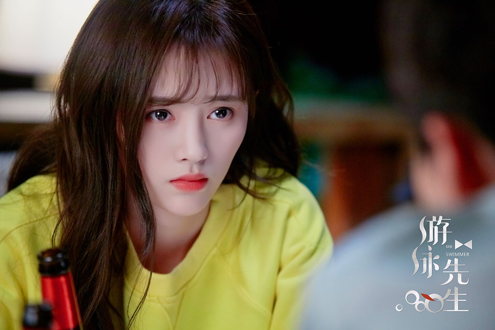
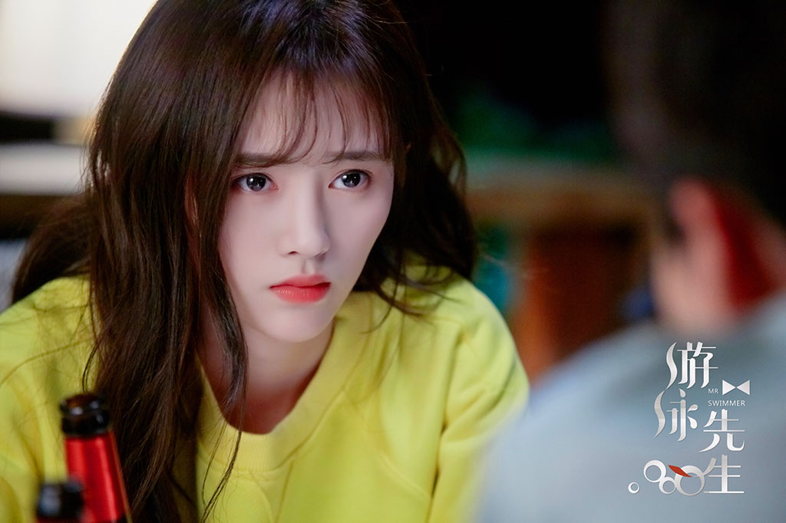

平凡家庭中长大的天才游泳选手白泳泽与家道中落的千金小姐宋茶茶在人生低谷中相识，成为欢喜冤家。泳泽的好友蓝天因为秘密不得不离开未婚妻茶茶。因此，在事业、友情、爱情面前，泳泽和蓝天从好友变成竞争对手。经历了严酷训练，二人在成为国家队成员的终极一战中展开对决。蓝天父亲设局让泳泽被迫放弃比赛，得知真相的蓝天战胜内心的胆怯，捍卫了竞技体育精神，毅然归还本应属于泳泽的荣誉。三人在经历诸多波折后成长为有责任感、性格坚韧、内心阳光正直的出色青年。
       
